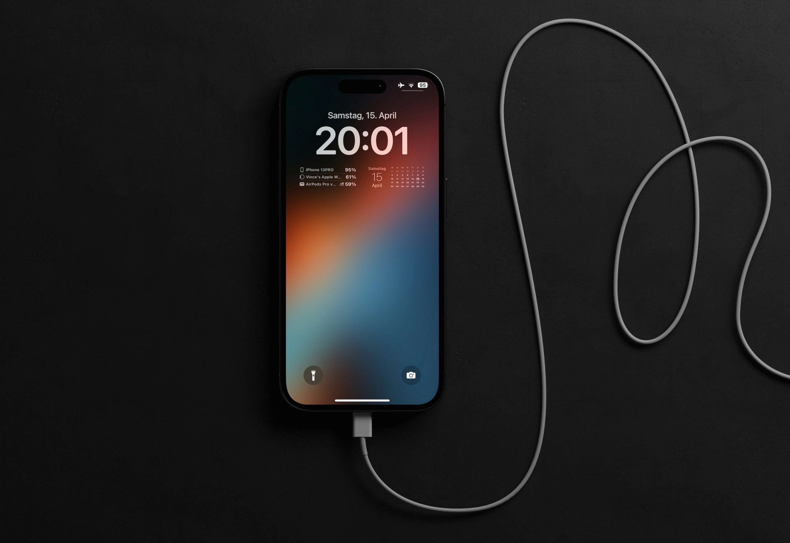

TECNOLOGIA
Nova bateria de estado sólido promete carregar smartphones de 0 a 100% em apenas 5 minutos
Pesquisadores de uma universidade asiática desenvolveram um novo composto que evita o superaquecimento durante recargas ultrarrápidas. A tecnologia deve chegar aos celulares de ponta já no próximo ano, aposentando o costume de carregar o aparelho durante a noite.